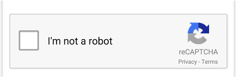

Mecanismos de Seguridad en Formularios
Los mecanismos de seguridad aseguran la protección de los formularios contra ataques maliciosos. A continuación, se muestra un ejemplo básico de cómo usar validaciones en el cliente y servidor.
Ejemplo Captcha
En el servidor, utiliza validaciones adicionales para evitar la inyección de código malicioso.
Introducción a AJAX
AJAX permite realizar solicitudes al servidor sin recargar la página. Aquí tienes un ejemplo básico de su uso:
Ejemplo
Esto carga datos de un archivo JSON y los muestra en la consola.
JQuery
JQuery simplifica la interacción con el DOM y las solicitudes AJAX. Aquí tienes un ejemplo básico:
Ejemplo
En este ejemplo, cuando se hace clic en el botón con el id “cambiarColor”, el fondo del cuerpo de la página se cambia a color celeste.
Mootools
Mootools es un framework de JavaScript para crear aplicaciones dinámicas. A continuación, un ejemplo básico:
Ejemplo
Una vez que tenemos los conceptos básicos, podemos implementar nuestro primer ejemplo, haremos que al cargar la página se aplique el estilo link a todos los enlaces de nuestro html, además pintamos de color rojo al div con nombre diverror, para ello tendríamos el siguiente código:
Prototype
Prototype ofrece herramientas avanzadas para trabajar con JavaScript. Aquí tienes un ejemplo básico:
Ejemplo
En este ejemplo, Coche es una función constructora que define el prototipo para los objetos de tipo coche. Los objetos creados a partir de esta función heredarán las propiedades y métodos definidos en el prototipo.